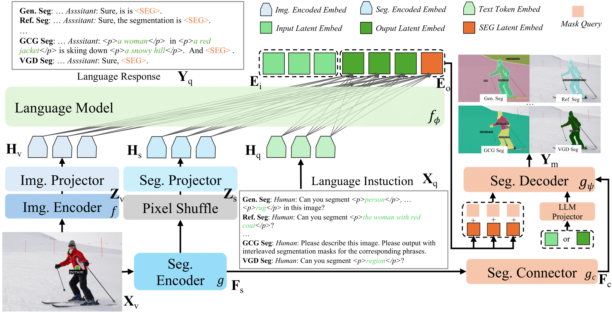
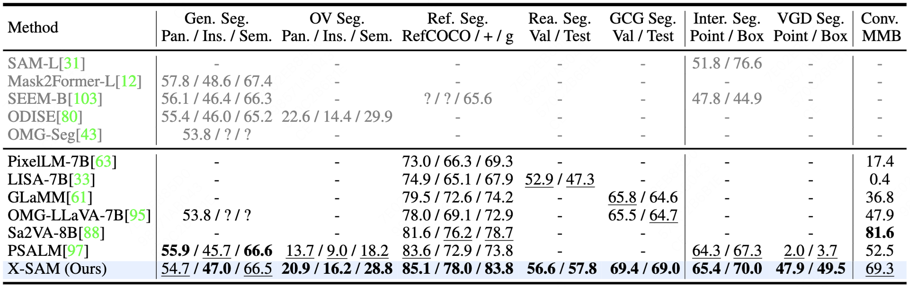
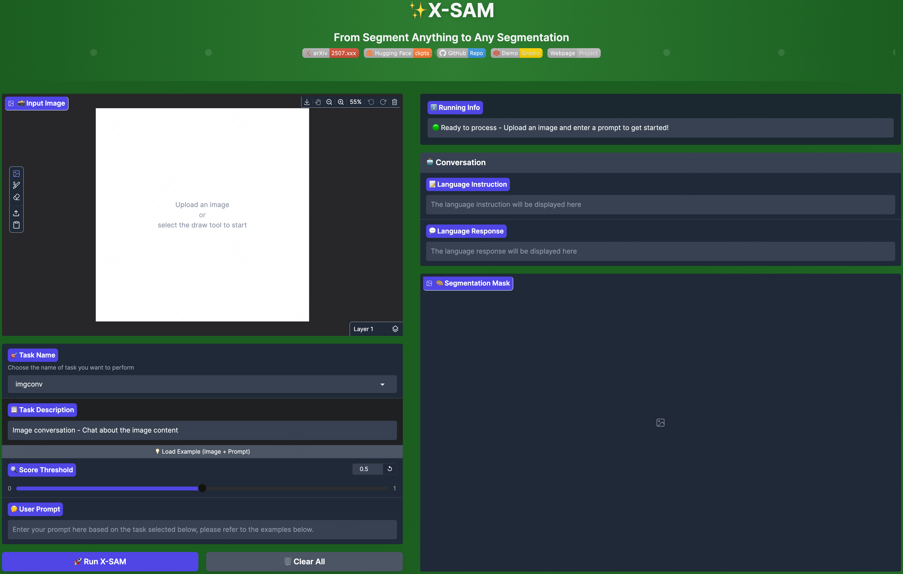

The Segment Anything Model (SAM) has emerged as a pivotal advancement in computer vision, particularly within the context of visual-prompt-driven segmentation. However, SAM is constrained by intrinsic limitations in multi-mask prediction and category-specific image segmentation tasks. Concurrently, Large Language Models (LLMs) have exhibited remarkable proficiency in comprehensive knowledge representation across a wide range of domains, yet they inherently lack the capacity for pixel-level perceptual understanding. To bridge these complementary gaps, we present X-SAM, a streamlined Multimodal Large Language Model (MLLM) framework that seamlessly integrates SAM with LLMs, thereby augmenting SAM's functionality from segment anything to any segmentation. Specifically, we introduce a novel approach for integrating SAM with MLLMs, which facilitates more advanced dense, pixel-level perceptual comprehension within MLLMs. Furthermore, we propose a new segmentation paradigm, termed Visual GrounDed (VGD) segmentation, which empowers MLLMs with visual grounded, pixel-wise interpretative capabilities. To enable effective training of MLLMs on diverse data sources, we devise a unified training strategy that supports co-training across multiple datasets. Experimental results demonstrate that X-SAM achieves state-of-the-art performance on a wide range of image segmentation benchmarks, highlighting its efficacy for multimodal pixel-level visual understanding.

Figure 1. Overview of X-SAM. X-SAM consists of dual encoders, dual projectors, a language model, a segmentation connector, and a segmentation decoder. First, the dual encoders encode the image simultaneously, then project them into the same dimension as text embeddings and feed them to the language model along with tokenized text embedding for instruction-guided image understanding. We bridge the SAM encoded feature with a connector to the segmentation decoder. In addition, the <SEG> token output by the LLM is decoded by the segmentation decoder into segmentation masks.
Table 1. Comprehensive Performance Comparison. We compare X-SAM with other methods, including segmentation-specific models (Gray) and MLLMs. A "-" indicates that the method does not support this task, while a "?" indicates that the method does not report results for this dataset. X-SAM achieves state-of-the-art performance across all image segmentation tasks with one model. The best performance is highlighted in bold, and the second-best performance is highlighted with underline.

We provide the Demo of X-SAM.

This project has referenced some excellent open-sourced repos xtuner, VLMEvalKit, Sa2VA. Thanks for their wonderful works and contributions to the community.